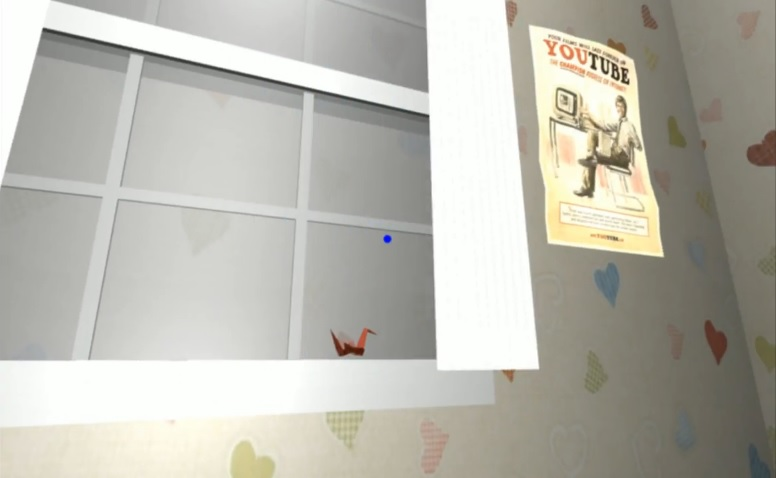
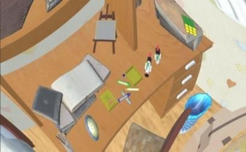
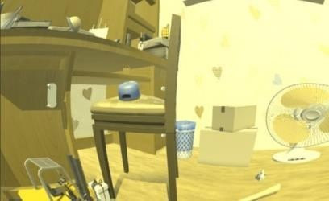
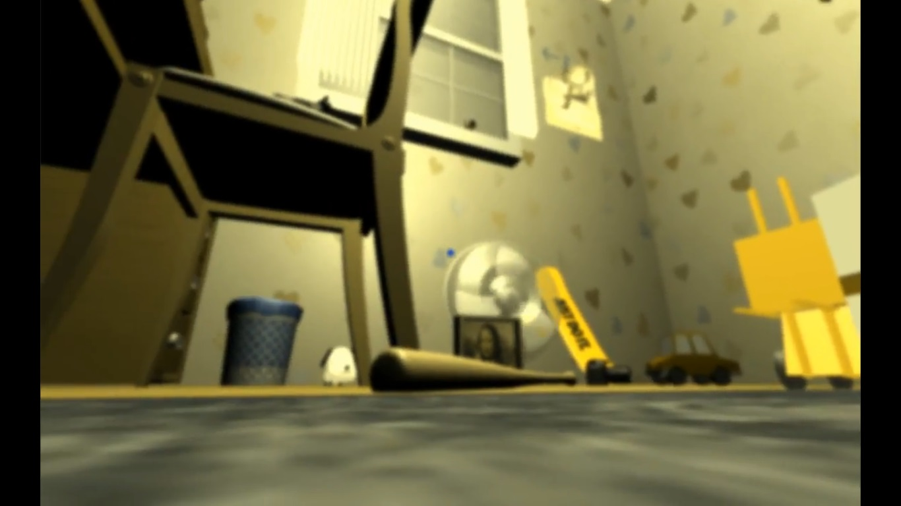

VR hack - Animal Escape
這是一款以運用動物視角為主要元素的逃脫遊戲。
在解謎的過程中，玩家能夠藉由找尋到某種動物的相關物件（例如：小狗的玩偶）進而轉換成該生物視角，在不同的狀態中搜尋線索，嘗試逃出。

紙鶴是轉換為鳥類視角的媒介
遊戲的媒材是虛擬實境，能讓使用者更深刻的體驗到各種生物視角，VR所提供的沉浸感也十分適合逃脫遊戲的要素。

虛擬實境使遊玩經驗更貼近現實中的密室逃脫
在轉換成各種生物的過程中，除了飛行生物的視角較高、貓狗的視角較貼近地面等較普遍的設計之外，還結合了一些冷門的知識，例如廣角的視野、色盲、近視等等，以此為元素設計謎題，提供玩家新穎的視覺體驗的同時也增加了一些教育性質。

在色盲的視角下才能看出隱藏的線索
在色盲的視角下才能看出隱藏的線索

在變身為狗時會體驗到近視及色盲的視覺效果
在變身為狗時會體驗到近視及色盲的視覺效果
此項作品最終榮幸獲得2017 VR Hack Fest Mobile VR組的最佳視覺設計獎及關鍵奇蹟獎
Video URL: https://www.youtube.com/watch?v=k0d6RhJJ8RM
2017 VR開發者黑客松大賽 http://vrhackfest.tw/